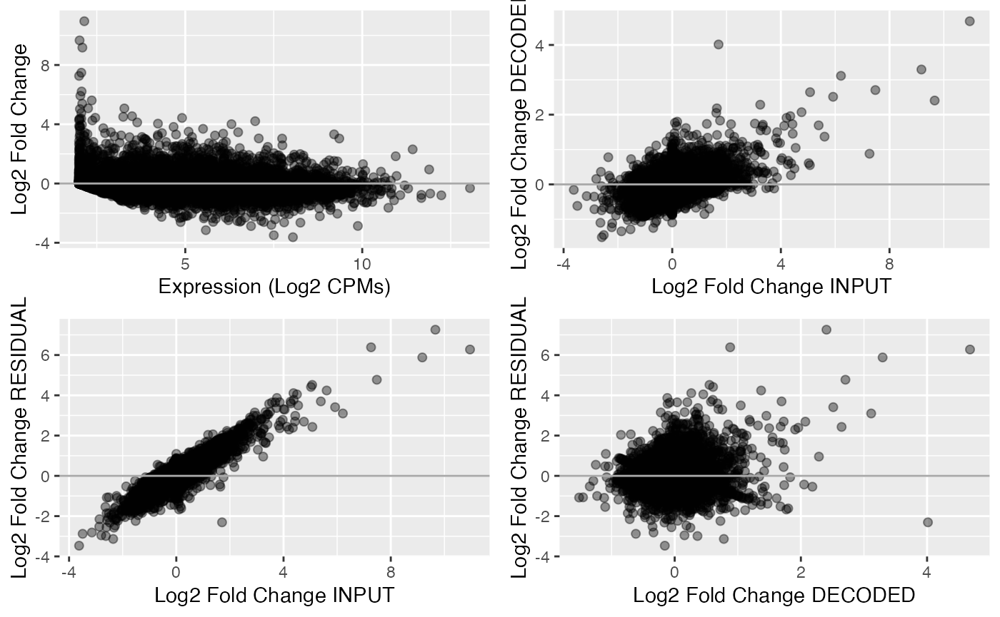

An introduction to contrast decomposition and querying using orthos
Panagiotis Papasaikas
Friedrich Miescher Institute for Biomedical Research, Basel, SwitzerlandSIB Swiss Institute of Bioinformaticspanagiotis.papasaikas@fmi.ch
Charlotte Soneson
Friedrich Miescher Institute for Biomedical Research, Basel, SwitzerlandSIB Swiss Institute of Bioinformaticscharlotte.soneson@fmi.ch
Michael Stadler
Friedrich Miescher Institute for Biomedical Research, Basel, SwitzerlandSIB Swiss Institute of Bioinformaticsmichael.stadler@fmi.ch
31 May 2023
orthosIntro.RmdIntroduction
RNAseq-based differential expression analysis upon cellular perturbations, such as gene knockouts, RNA knockdowns or compound treatment experiments, is the most commonly used tool for probing molecular mechanisms of action due to its simplicity and low cost.
However, interpretation of such gene expression contrasts is confounded by the complex and nuanced impacts of experimental treatments on cellular processes.
For example, knockout or over-expression of a transcription factor will not only alter the transcription of its direct target genes, but also cause many secondary expression changes. In addition, treatments or treatment delivery agents typically elicit a variety of unintended, systemic responses (such as immune, toxic, metabolic) that cannot be well-controlled for by the design of the study.
The final experimentally measured gene expression changes are a hard to assess convolution of specific and non-specific secondary and lateral treatment effects.
orthos is a generative modelling-based approach that
disentangles the experiment-specific from the non-specific effects of
perturbations on gene expression. It is trained on a large corpus of
gene expression contrasts (per organism >60K annotated, >0.5M
augmented), compiled from the ARCHS4 database of uniformly
processed RNAseq experiments (Lachmann et al.
(2018)). It accurately captures and isolates
non-specific effects (effects that are observed across
multiple treatments) while accounting for context (tissue or cell-line
experimental background).
The residual specific component obtained from this decomposition offers a more unequivocal experimental signature and is more closely related to the direct molecular effects of the perturbation when compared to the raw signal.
In addition to providing a clearer understanding of the effects of
experimental treatments on gene expression, orthos also
enables researchers to query the contrast database with
arbitrary contrasts and identify experiments with similar specific
effects, ultimately helping to map treatments to mechanisms of
action.
Installation and overview
orthos can be installed from from Bioconductor using
BiocManager::install():
if (!requireNamespace("BiocManager", quietly = TRUE))
install.packages("BiocManager")
BiocManager::install("orthos")
# or also...
BiocManager::install("orthos", dependencies = TRUE)After installation, the package can be loaded with:
library(orthos)A typical analysis involves two steps:
Decomposing one or several contrasts into their corresponding specific and non-specific components using the
decomposeVar()function andPerforming queries with the original and decomposed specific and non-specific contrasts against the contrast database using the
queryWithContrasts()function.
Demonstration data
To demonstrate the functionality of orthos we use a
dataset from the the GEO series GSE215150.
This series was not part of the orthos training or the
orthosData contrast database; it was only publicly released
on January 1st 2023 after the freeze of the training data to the ARCHS4
v2.1.2 database.
The performed experiment involves over-expression (OE) of the MKL/megakaryoblastic leukemia 1 gene (also termed MRTFA/myocardin related transcription factor A) and a constitutively active mutant MKL1 (caMKL1, described in Hu et al. (2019)). Both OE experiments were performed in mouse LM2 and human 4T1 tumor-derived breast cancer cell lines. In addition to the MKL1/caMKL1 OE samples, the series also contains no-treatment controls for each of the two cell lines.
For simplicity the three biological replicates of each available condition have been collapsed in the data provided in the package.
In the provided form each of the two datasets (Mouse, Human) contains raw counts for over 55,000 genes identified by gene symbols in three conditions: Control (Ctrl), MKL1 OE (MKL1) and constitutively-active MKL1 OE (caMKL1).
Load the human dataset:
MKL1_human <- readRDS(system.file("extdata", "GSE215150_MKL1_Human.rds",
package = "orthos"))
head(MKL1_human)
#> Ctrl MKL1 caMKL1
#> DDX11L1 6 3 4
#> WASH7P 47 57 41
#> MIR6859-1 10 10 6
#> MIR1302-2HG 0 6 1
#> MIR1302-2 0 0 0
#> FAM138A 1 1 5
dim(MKL1_human)
#> [1] 59453 3Load the mouse dataset:
MKL1_mouse <- readRDS(system.file("extdata", "GSE215150_MKL1_Mouse.rds",
package = "orthos"))
head(MKL1_mouse)
#> Ctrl MKL1 caMKL1
#> 4933401J01Rik 0 0 0
#> Gm26206 0 0 0
#> Xkr4 0 0 0
#> Gm18956 0 0 0
#> Gm37180 0 0 0
#> Gm37363 0 0 0
dim(MKL1_mouse)
#> [1] 55367 3Decomposition of differential gene expression variance into specific
and non-specific components using decomposeVar()
Prelude: A short overview of the orthos models
The workhorse behind orthos are organism-specific
conditional variational autoencoder (cVAE) models that break down the
variance of a given differential expression experiment into a
non-specific and an experiment-specific component.
The non-specific component corresponds to gene variance that has been observed across multiple instances during training, while the experiment-specific variance is fairly unique to the experiment.
The inputs to the models are gene counts in the form of log2-transformed counts per million (LCPMs) that are used to encode the context of the performed experiment as well as the actual gene expression contrasts in the form of log2 fold-changes (LFCs), i.e log2-transformed CPM ratios.
As we will see, calculation of those inputs is by default performed internally given only raw gene counts and a specification of the contrasted conditions.
Given these inputs, the model maps the contrast to a concise latent representation (zD) which retains its recurring -and therefore compressible- traits. The compressed latent representation is then used to reconstruct a decoded version of the contrast*.
The decoded contrast corresponds directly to the non-specific component of the observed effects; it subsumes regularities i.e gene variance that the model can account for because it has been repeatedly encountered, in some form, during training.
The residual obtained after removing the decoded contrast from the original one is the specific component; this encompasses the gene variance that the model cannot account for (experiment-specific biological effects + random noise).
From now on the terms decoded and non-specific will be used in conjunction or interchangeably. Ditto for the terms residual and specific.
 * Notice that both the
latent encoding and the decoded output are conditioned on context (i.e
they are context-specific). This means that decomposing a contrast on a
different context will produce a different output. An interesting
ancillary application of this conditioning is that one can “morph”
decoded contrasts to in-silico evaluate non-specific effects in
new contexts.
* Notice that both the
latent encoding and the decoded output are conditioned on context (i.e
they are context-specific). This means that decomposing a contrast on a
different context will produce a different output. An interesting
ancillary application of this conditioning is that one can “morph”
decoded contrasts to in-silico evaluate non-specific effects in
new contexts.
In essence, we can infer what the non-specific effects would look
like had the experiment been performed in e.g different cell-lines,
tissues, batches, patients or using different library-preparation
protocols. The inferred decodings will reflect the new context in
multiple ways. For example, genes that were non-detected/non-expressed
in the original contrast (and therefore had neutral LFCs ) will produce
new (possibly non-neutral) decoded LFCs if present in the new context
and vice versa. This “out-of-context” type of inference
is limited to the decoded contrast, as by definition, the residual is
not part of the model’s generative capacity. Mechanically,
out-of-context inference of non-specific effects is a simple as
evaluating the same contrast using multiple contexts when calling
decomposeVar() (see section below).
Contrast decomposition with decomposeVar()
The function that performs this contrast decomposition into the
non-specific and specific components is decomposeVar().
There are two available modes in which the required inputs can be fed
into the function:
In the first mode the user passes the matrix
Mof raw counts (genes in rows, conditions in columns) and two vectorstreatmandcntrof equal length specifying the column indices inMcorresponding to the “treatments” and their respective “controls”. The same column indices can be repeated multiple times in these vectors, for example in the case where multiple treatments are paired to the same control.In the second mode the user passes the matrix
Mof raw counts and a second matrixMDthat contains pre-calculated log2 fold-changes for the contrasts to be analyzed. In this mode,Mspecifies the contexts for the corresponding columns ofMD, and thus the two matrices need to have the same dimensionality and identical row- and column-names. This would be the mode of choice if e.g one wishes to produce the LFCs independently or if one wants to evaluate the decoding of the same contrast(s) in multiple contexts (e.g for “out-of-context” inference of non-specific effects described above). In the latter case, copies of the same contrast in columns ofMDwill be paired with columns ofMspecifying the different contexts.
In both modes the rownames of M (and MD if
specified) need to correspond to valid gene identifiers (currently
orthos supports Entrez gene identifiers, ENSEMBL gene
identifiers, gene symbols or ARCHS4 gene identifiers). By default the
type of gene identifier is detected automatically.
The first time that decomposeVar is executed for a
particular organism, the models required for inference will be
automatically downloaded from ExperimentHub and cached in
the user ExperimentHub directory (see
ExperimentHub::getExperimentHubOption("CACHE")) using the
orthosData companion package.
For the MKL1 data, which are stored as raw counts, it is more natural
to call decomposeVar() using the first mode.
Decomposing the human contrasts:
#Decompose MKL1-vs-Cntrl and caMKL1-vs-Cntrl contrasts for human:
dec_MKL1_human <- decomposeVar(M = MKL1_human, treatm = c(2, 3), cntr = c(1, 1),
organism = "Human", verbose = FALSE)
dec_MKL1_human
#> class: SummarizedExperiment
#> dim: 20411 2
#> metadata(0):
#> assays(4): INPUT_CONTRASTS DECODED_CONTRASTS RESIDUAL_CONTRASTS CONTEXT
#> rownames(20411): A1BG A1BG-AS1 ... WFDC5 XAGE2
#> rowData names(1): User_provided_IDs
#> colnames(2): MKL1 caMKL1
#> colData names(3): ACCOUNTED_VARIANCE.DECODED
#> ACCOUNTED_VARIANCE.RESIDUAL ACCOUNTED_VARIANCE.COMMONDecomposing the mouse contrasts:
#Decompose MKL1-vs-Cntrl and caMKL1-vs-Cntrl contrasts for mouse:
dec_MKL1_mouse <- decomposeVar(M = MKL1_mouse, treatm = c(2, 3), cntr = c(1, 1),
organism = "Mouse", verbose = FALSE)
dec_MKL1_mouse
#> class: SummarizedExperiment
#> dim: 20339 2
#> metadata(0):
#> assays(4): INPUT_CONTRASTS DECODED_CONTRASTS RESIDUAL_CONTRASTS CONTEXT
#> rownames(20339): 0610005C13Rik 0610009B22Rik ... n-R5s146 n-R5s149
#> rowData names(1): User_provided_IDs
#> colnames(2): MKL1 caMKL1
#> colData names(3): ACCOUNTED_VARIANCE.DECODED
#> ACCOUNTED_VARIANCE.RESIDUAL ACCOUNTED_VARIANCE.COMMONThe output of decomposeVar() is a
SummarizedExperiment object with dimensions N
x M, where N is the number of
orthos genes* for that
organism and M is the number of contrasts specified during
input.
The SummarizedExperiment output also has 4 assay slots
corresponding to the input contrasts, decoded (non-specific), and
residual (specific) components, as well as the gene context. Contrasts
are represented as log2 fold-changes (LFCs) and context is represented
as log2-transformed counts per million (log2 CPM).
We can use the returned object to produce an MA plot for the original contrast or to check how the input and decomposed contrasts are related to each other.
For example for the mouse caMKL1 contrast:
suppressPackageStartupMessages({
library(ggplot2)
library(SummarizedExperiment)
})
assays(dec_MKL1_mouse)
#> List of length 4
#> names(4): INPUT_CONTRASTS DECODED_CONTRASTS RESIDUAL_CONTRASTS CONTEXT
#MA plot of for the input contrasts:
DF <- data.frame(L2CPM= assay(dec_MKL1_mouse,"CONTEXT")[,2],
L2FC_INPUT=assay(dec_MKL1_mouse,"INPUT_CONTRASTS")[,2],
L2FC_DECODED=assay(dec_MKL1_mouse,"DECODED_CONTRASTS")[,2],
L2FC_RESIDUAL=assay(dec_MKL1_mouse,"RESIDUAL_CONTRASTS")[,2]
)
#MA plot of for the input contrast
P1 <- ggplot(data=DF, aes(x=L2CPM, y=L2FC_INPUT)) +
geom_point(alpha=0.4, size=1.8) +
geom_hline(aes(yintercept = 0), colour = "darkgray", linewidth = 0.5) +
xlab("Expression (Log2 CPMs)") +
ylab("Log2 Fold Change")
#Delta-delta plots for the input and decomposed contrast fractions
P2 <- ggplot(data=DF, aes(x=L2FC_INPUT, y=L2FC_DECODED)) +
geom_point(alpha=0.4, size=1.8) +
geom_hline(aes(yintercept = 0), colour = "darkgray", linewidth = 0.5) +
xlab("Log2 Fold Change INPUT") +
ylab("Log2 Fold Change DECODED")
P3 <- ggplot(data=DF, aes(x=L2FC_INPUT, y=L2FC_RESIDUAL)) +
geom_point(alpha=0.4, size=1.8) +
geom_hline(aes(yintercept = 0), colour = "darkgray", linewidth = 0.5) +
xlab("Log2 Fold Change INPUT") +
ylab("Log2 Fold Change RESIDUAL")
P4 <- ggplot(data=DF, aes(x=L2FC_DECODED, y=L2FC_RESIDUAL)) +
geom_point(alpha=0.4, size=1.8) +
geom_hline(aes(yintercept = 0), colour = "darkgray", linewidth = 0.5) +
xlab("Log2 Fold Change DECODED") +
ylab("Log2 Fold Change RESIDUAL")
cowplot::plot_grid(P1,P2,P3,P4)
As expected, both the decoded and residual components are correlated to the input contrast. However, the residual and decoded components are largely uncorrelated.
The colData of the object summarizes the proportion of
variance accounted for in each decomposed component:
colData(dec_MKL1_human)
#> DataFrame with 2 rows and 3 columns
#> ACCOUNTED_VARIANCE.DECODED ACCOUNTED_VARIANCE.RESIDUAL
#> <numeric> <numeric>
#> MKL1 0.326622 0.834041
#> caMKL1 0.323083 0.776842
#> ACCOUNTED_VARIANCE.COMMON
#> <numeric>
#> MKL1 0.1606626
#> caMKL1 0.0999251
colData(dec_MKL1_mouse)
#> DataFrame with 2 rows and 3 columns
#> ACCOUNTED_VARIANCE.DECODED ACCOUNTED_VARIANCE.RESIDUAL
#> <numeric> <numeric>
#> MKL1 0.340694 0.873229
#> caMKL1 0.294274 0.791121
#> ACCOUNTED_VARIANCE.COMMON
#> <numeric>
#> MKL1 0.2139228
#> caMKL1 0.0853951* Notice that, of
the total gene features present in the input (over 55,000), only ~20,000
genes are part of the orthos model () and the
decomposeVar() output.
These ~20,000 orthos genes are “sanctioned” according to
several criteria (located on canonical chromosomes, no pseudogenes, no
ribosomal protein genes, detected in at least a small fraction of the
ARCHS4 database).
The model is highly robust to small fractions of orthos
genes not being part of the user input, even if those genes are
expressed in the context under consideration. That being noted, it is
safer to feed-in inputs that are as comprehensive as possible, i.e
not filtered in any way, in terms of gene features.
Querying the database of gene contrasts using
queryWithContrasts()
Typically, the next step of the analysis involves querying the
contrasts database (orthosData) to identify public
experiments similar to the one(s) under investigation, either in terms
of the original or decomposed decoded (non-specific) and residual
(specific) contrasts. As we will see in the following examples the
results’ of these queries can guide the interpretation of of the
different contrast fractions.
orthosData contains over 100,000 differential gene
expression experiments compiled from the ARCHS4 database of publicly
available expression data (Lachmann et al.
(2018)). Each entry in orthosData corresponds to a
pair of RNAseq samples contrasting a treatment vs a control condition. A
combination of metadata, semantic and quantitative analyses was used to
determine the proper assignment of samples to such pairs in
orthosData.
The function that performs the queries against
orthosData is queryWithContrasts(). The input
to this function is the SummarizedExperiment object
obtained in the previous step from decomposeVar(), either
the complete object or one that has been column-subsetted, allowing to
query the contrast database with only a subset of the decomposed
contrasts.
As was the case for the orthos models, a database will
be automatically downloaded from ExperimentHub and cached
in the user ExperimentHub directory (see
ExperimentHub::getExperimentHubOption("CACHE")) using the
orthosData companion package, the first time
queryWithContrasts() is called for that database or the
first time the user attempts to access the database directly with
loadContrastDatabase() (see Accessing the contrast
database) .
The queryWithContrasts() function returns a list with
three elements per query contrast:
- “pearson.rhos” is itself a list with each element containing the
Pearson correlation values against all the
orthosDataentries for a specific component (input, decoded/non-specific, residual/specific). - “zscores” is also a list with each element containing the z-score transformed version of the “pearson.rhos” values.
- “TopHits” is also a list with detailed
orthosDatametadata for each of the topdetailTopnhits per component (default 10).
In the following examples, please note that the queries are run using
mode = "DEMO" in order to keep computations short. For
actual analyses, the default mode = "ANALYSIS" should be
used.
Examples queries using the decomposed human MKL1 data:
# parallelization parameters:
params <- BiocParallel::MulticoreParam(workers = 2)
# for demonstration purposes (for actual analyses, use 'mode = "ANALYSIS"'):
query.res.human <- queryWithContrasts(dec_MKL1_human, organism = "Human",
BPPARAM = params, verbose = FALSE,
mode = "DEMO")
names(query.res.human)
#> [1] "pearson.rhos" "zscores" "TopHits"
names(query.res.human$zscores)
#> [1] "INPUT_CONTRASTS" "DECODED_CONTRASTS" "RESIDUAL_CONTRASTS"
# query contrasts in rows, `orthosData` entries in columns:
dim(query.res.human$zscores$RESIDUAL_CONTRASTS)
#> [1] 2 1000
summary(t(query.res.human$zscores$RESIDUAL_CONTRASTS))
#> MKL1 caMKL1
#> Min. :-3.17999 Min. :-2.47869
#> 1st Qu.:-0.53837 1st Qu.:-0.44872
#> Median :-0.09769 Median :-0.09039
#> Mean : 0.00000 Mean : 0.00000
#> 3rd Qu.: 0.36729 3rd Qu.: 0.30576
#> Max. : 7.38595 Max. :13.90709
#Information on the top hits of the query using the residual human MKL1/caMKL1 contrasts:
query.res.human$TopHits$RESIDUAL_CONTRASTS
#> $MKL1
#> DataFrame with 10 rows and 8 columns
#> Zscore TREATM_geo_accession title
#> <numeric> <character> <character>
#> GSM2044531 7.38595 GSM2044531 MYOCD-1
#> GSM2044532 7.31258 GSM2044532 MYOCD-2
#> GSM3066023 6.63946 GSM3066023 HEL-iMKL1 Dox treate..
#> GSM3544074 6.21459 GSM3544074 MEL270.SF3B1_WT
#> GSM4869874 5.46485 GSM4869874 U2OS cells - DMSO - ..
#> GSM3544069 5.23304 GSM3544069 MEL270.SF3B1_K700E
#> GSM5013969 4.91198 GSM5013969 chase_4sU_merged.EtO..
#> GSM4718649 4.79887 GSM4718649 F508delCFBE41o, siCT..
#> GSM5013974 4.79434 GSM5013974 nochase_spiked_4sU_4..
#> GSM5709388 4.73799 GSM5709388 EFM192A-LAP-DTP1_S11
#> characteristics_ch1 series_id source_name_ch1
#> <character> <character> <character>
#> GSM2044531 transduction: ad-MYOCD GSE77120 vascular smooth musc..
#> GSM2044532 transduction: ad-MYOCD GSE77120 vascular smooth musc..
#> GSM3066023 treatment: Treated w.. GSE112277,GSE112279 HEL-iMKL1 cells
#> GSM3544074 cell line: MEL270,le.. GSE124720 MEL270
#> GSM4869874 cell type: U2OS,trea.. GSE160253,GSE160254 U2OS cells
#> GSM3544069 cell line: MEL270,le.. GSE124720 MEL270
#> GSM5013969 treatment (etoh or 4.. GSE164555,GSE164569 SH-EP-MYCNER shEXOSC10
#> GSM4718649 cell type: Immortali.. GSE155987 Parental CFBE41o- Ce..
#> GSM5013974 treatment (etoh or 4.. GSE164555,GSE164569 SH-EP-MYCNER shEXOSC10
#> GSM5709388 treatment: 14 day la.. GSE156246 EFM192A
#> CNT_geo_accession corr_TREATM_CNT
#> <character> <numeric>
#> GSM2044531 GSM2044530 0.963492
#> GSM2044532 GSM2044530 0.963938
#> GSM3066023 GSM3066021 0.995455
#> GSM3544074 GSM3544065 0.995561
#> GSM4869874 GSM4869870 0.993011
#> GSM3544069 GSM3544065 0.994787
#> GSM5013969 GSM5013971 0.994540
#> GSM4718649 GSM4718652 0.993717
#> GSM5013974 GSM5013976 0.992348
#> GSM5709388 GSM5709390 0.959956
#>
#> $caMKL1
#> DataFrame with 10 rows and 8 columns
#> Zscore TREATM_geo_accession title
#> <numeric> <character> <character>
#> GSM2044531 13.90709 GSM2044531 MYOCD-1
#> GSM2044532 13.85102 GSM2044532 MYOCD-2
#> GSM4189923 6.84975 GSM4189923 HT11_iSM_old_rep3
#> GSM4189922 6.83691 GSM4189922 HT15_iSM_old_rep2
#> GSM3976594 4.62126 GSM3976594 FSK_IL-1beta_2
#> GSM3066023 4.62013 GSM3066023 HEL-iMKL1 Dox treate..
#> GSM3976593 4.52470 GSM3976593 FSK_IL-1beta_1
#> GSM3976595 4.38356 GSM3976595 FSK_IL-1beta_3
#> GSM4189918 3.97301 GSM4189918 RS17_iSM_young_rep1
#> GSM4189920 3.89561 GSM4189920 RS14_iSM_young_rep3
#> characteristics_ch1 series_id source_name_ch1
#> <character> <character> <character>
#> GSM2044531 transduction: ad-MYOCD GSE77120 vascular smooth musc..
#> GSM2044532 transduction: ad-MYOCD GSE77120 vascular smooth musc..
#> GSM4189923 treatment: induced c.. GSE140898 human induced smooth..
#> GSM4189922 treatment: induced c.. GSE140898 human induced smooth..
#> GSM3976594 cell type: hTERT-HM^.. GSE134896 myometrium
#> GSM3066023 treatment: Treated w.. GSE112277,GSE112279 HEL-iMKL1 cells
#> GSM3976593 cell type: hTERT-HM^.. GSE134896 myometrium
#> GSM3976595 cell type: hTERT-HM^.. GSE134896 myometrium
#> GSM4189918 treatment: induced c.. GSE140898 human induced smooth..
#> GSM4189920 treatment: induced c.. GSE140898 human induced smooth..
#> CNT_geo_accession corr_TREATM_CNT
#> <character> <numeric>
#> GSM2044531 GSM2044530 0.963492
#> GSM2044532 GSM2044530 0.963938
#> GSM4189923 GSM4189934 0.975019
#> GSM4189922 GSM4189934 0.978935
#> GSM3976594 GSM3976579 0.985832
#> GSM3066023 GSM3066021 0.995455
#> GSM3976593 GSM3976579 0.987186
#> GSM3976595 GSM3976579 0.987181
#> GSM4189918 GSM4189933 0.983446
#> GSM4189920 GSM4189934 0.979353Example queries using the decomposed mouse MKL1 data:
# query the database using only the "caMKL1" mouse contrast, suppress plotting:
# for demonstration purposes (for actual analyses, use 'mode = "ANALYSIS"'):
query.res.mouse <- queryWithContrasts(dec_MKL1_mouse[, "caMKL1"], organism = "Mouse",
BPPARAM = params, verbose = FALSE,
plotType = "none", mode = "DEMO")
# plot results for individual contrasts using violin plots:
ViolinPlots_mouse <- plotQueryResultsViolin(query.res.mouse, doPlot = FALSE)
ViolinPlots_mouse[["caMKL1"]]
# plot results for individual contrasts using composite Manhattan/Density plots:
ManhDensPlots_mouse <- plotQueryResultsManh(query.res.mouse, doPlot = FALSE)
ManhDensPlots_mouse[["caMKL1"]]
#Information on the top hits of the query using the residual mouse caMKL1 contrasts:
query.res.mouse$TopHits$RESIDUAL_CONTRASTS
#> $caMKL1
#> DataFrame with 10 rows and 8 columns
#> Zscore TREATM_geo_accession title
#> <numeric> <character> <character>
#> GSM5021181 14.91050 GSM5021181 E0771_pRetrox_MRTFA_..
#> GSM5021173 9.44599 GSM5021173 B16F10_pRetrox_MRTFA..
#> GSM5021171 7.65648 GSM5021171 B16F10_pRetrox_MRTFA..
#> GSM5021172 5.90237 GSM5021172 B16F10_pRetrox_MRTFA..
#> GSM5396603 5.09239 GSM5396603 NA4
#> GSM5396607 5.05168 GSM5396607 NA8
#> GSM5396602 5.01185 GSM5396602 NA3
#> GSM5396606 4.93570 GSM5396606 NA7
#> GSM4928843 4.68661 GSM4928843 β-actin knockout Mo..
#> GSM3176949 4.61862 GSM3176949 11D_mmu-miR-1199-5p
#> characteristics_ch1 series_id source_name_ch1
#> <character> <character> <character>
#> GSM5021181 strain: C57BL6,cell .. GSE164860 E0771 cells
#> GSM5021173 strain: C57BL6,cell .. GSE164860 B16F10 cells
#> GSM5021171 strain: C57BL6,cell .. GSE164860 B16F10 cells
#> GSM5021172 strain: C57BL6,cell .. GSE164860 B16F10 cells
#> GSM5396603 strain: C57BL/6,tiss.. GSE178725 Mouse embryonic fibr..
#> GSM5396607 strain: C57BL/6,tiss.. GSE178725 Mouse embryonic fibr..
#> GSM5396602 strain: C57BL/6,tiss.. GSE178725 Mouse embryonic fibr..
#> GSM5396606 strain: C57BL/6,tiss.. GSE178725 Mouse embryonic fibr..
#> GSM4928843 cell type: fibroblas.. GSE161964 Mouse Embronic Fibro..
#> GSM3176949 cell line: NMUMG,sub.. GSE115375,GSE115376 NMUMG cells, clone E9
#> CNT_geo_accession corr_TREATM_CNT
#> <character> <numeric>
#> GSM5021181 GSM5021179 0.974858
#> GSM5021173 GSM5021170 0.995724
#> GSM5021171 GSM5021168 0.994685
#> GSM5021172 GSM5021169 0.994397
#> GSM5396603 GSM5396601 0.993751
#> GSM5396607 GSM5396601 0.992054
#> GSM5396602 GSM5396600 0.993440
#> GSM5396606 GSM5396600 0.991412
#> GSM4928843 GSM4928841 0.975952
#> GSM3176949 GSM3176958 0.977919The top hits obtained for the residual (specific) fractions of either MKL1 or caMKL1 contrasts both in human and mouse are more clearly separated from the background compared to those obtained from the input or decoded (non-specific) fractions.
More importantly closer inspection of those top hits for the residual contrasts in both experiments (e.g hits from series GSE77120, GSE112277 or GSE140898 in human or GSE164860 in mouse) reveal that they correspond to treatments involving either MKL/MRTFA overexpression or overexpression of the MKL related transcription factor MYOCD. Of note, these treatments were performed in various cell contexts, different from the ones of the MKL study under consideration (LM2 and 4T1 cell lines for mouse and human respectively).
In general, as in this example, the residual specific fraction of a DGE profile will be a better query proxy for molecularly and mechanistically related treatments as it is largely stripped of nuisance variance present in the original contrast.
On the other hand the decoded non-specific fraction and its corresponding query hits can also be of interest in some applications as they provide information on the extent and type of downstream/secondary or lateral treatment effects.
Accessing the contrast database
The orthos package provides functionality for direct
access to contrast databases of orthosData with the
loadContrastDatabase() function.
This can be used to retrieve contrast values for all or subsets of
genes or metadata for specific datasets, e.g for hits identified with
queryWithContrasts().
The organism-specific databases are compiled as
HDF5SummarizedExperiment objects. As was the case for the
orthos models, a database will be automatically downloaded
from ExperimentHub and cached in the user ExperimentHub
directory (see
ExperimentHub::getExperimentHubOption("CACHE")) using the
orthosData companion package, the first time
loadContrastDatabase() is called for that database either
directly or via queryWithContrasts().
The HDF5SummarizedExperiment object contains pre-calculated INPUT,
RESIDUAL and DECODED log2 fold change contrasts as well as the
corresponding expression CONTEXT in log2 CPM representation for all the
datasets in orthosData.
Extensive gene and contrast annotation is available in the object’s
rowData and colData respectively.
organism <- "Mouse"
orthosDB <- loadContrastDatabase(organism = "Mouse", mode = "DEMO")
orthosDB
#> class: SummarizedExperiment
#> dim: 20339 988
#> metadata(0):
#> assays(4): INPUT_CONTRASTS DECODED_CONTRASTS RESIDUAL_CONTRASTS CONTEXT
#> rownames(20339): 0610005C13Rik 0610009B22Rik ... n-R5s146 n-R5s149
#> rowData names(15): seqnames start ... ENTREZ_GENE_ID ARCHS4_ID
#> colnames(988): GSM1053282 GSM1061179 ... GSM970471 GSM984548
#> colData names(33): aligned_reads channel_count ... HasAssignedCNT
#> CNTname
#Available contrast annotations:
colnames(colData(orthosDB))
#> [1] "aligned_reads" "channel_count" "characteristics_ch1"
#> [4] "contact_address" "contact_city" "contact_country"
#> [7] "contact_institute" "contact_name" "contact_zip"
#> [10] "data_processing" "extract_protocol_ch1" "geo_accession"
#> [13] "instrument_model" "last_update_date" "library_selection"
#> [16] "library_source" "library_strategy" "molecule_ch1"
#> [19] "organism_ch1" "platform_id" "relation"
#> [22] "series_id" "singlecellprobability" "source_name_ch1"
#> [25] "sra_id" "status" "submission_date"
#> [28] "taxid_ch1" "title" "type"
#> [31] "Cor2CNT" "HasAssignedCNT" "CNTname"
#Available gene annotations:
colnames(rowData(orthosDB))
#> [1] "seqnames" "start"
#> [3] "end" "width"
#> [5] "strand" "ENSEMBL_GENE_ID"
#> [7] "gene_name" "gene_biotype"
#> [9] "seq_coord_system" "description"
#> [11] "ENSEMBL_GENE_ID_VERSION" "ENSEMBL_CANONICAL_TRANSCRIPT"
#> [13] "GENE_SYMBOL" "ENTREZ_GENE_ID"
#> [15] "ARCHS4_ID"
#Retrieve partial annotation for a specific contrast
#returned as a top-hit in the mouse caMKL1 query above:
colData(orthosDB)["GSM5021181", c("title", "series_id", "CNTname")]
#> DataFrame with 1 row and 3 columns
#> title series_id CNTname
#> <character> <character> <character>
#> GSM5021181 E0771_pRetrox_MRTFA_.. GSE164860 GSM5021179
# Compare context and individual contrast fractions between
# the mouse caMKL1 contrast under consideration and the "GSM5021181"
# query hit:
par(mfrow = c(2, 2))
queryID <- "GSM5021181"
for (contrast in names(assays(dec_MKL1_mouse))[c(4, 1, 2, 3)]) {
unit <- "L2FC"
if (contrast == "CONTEXT") {unit <- "L2CPM"}
plot(assays(dec_MKL1_mouse)[[contrast]][, "caMKL1"],
assays(orthosDB)[[contrast]][, queryID],
pch = 16, cex = 0.5, col = "darkslategrey", main = contrast,
xlab = paste0(unit, " caMKL1"), ylab = paste0(unit, " ", queryID))
abline(0, 1, col = "darkred", lwd = 0.8, lty = 2)
} Advanced use cases: Directly accessing the orthos models
As (1) typical orthos use cases do not require direct
access to the models and (2) use of the models requires loading of a
conda environment via basilisk this functionality is by
default not exposed to the user and is carried out transparently by the
non-exported functions .predictEncoder() and
.predictEncoderD().
However, as we envision cases where directly accessing the models might be of interest we provide here a brief overview and examples for direct calls to these functions.
The orthos models are implemented in Keras.
For each organism there are two types of models:
- A context encoder that produces a latent embedding for a specific input context (represented as L2CPMs) and
- A contrast conditional variational autoencoder that
first produces latent embeddings of input contrasts (represented as
LFCs) conditioned on context embeddings and then generates decoded
versions of those contrasts, again conditioned on the context embeddings
(see also figure in Prelude: A short
overview of the
orthosmodels).
As noted previously the first time these models are requested either
by decomposeVar or directly by
.predictEncoder() and .predictEncoderD() they
are downloaded and cached in the user ExperimentHub directory (see
ExperimentHub::getExperimentHubOption("CACHE")) using the
orthosData companion package.
When calling the .predictEncoder() and
.predictEncoderD() methods directly be attentive to the
following:
- Before the call the predefined conda environment
orthos:::orthosenvneeds to be activated usingbasilisk::basiliskStart() - The inputs passed to the models need to have appropriate size and value representation (see examples below).
- After the calls it’s good practice to deactivate the environment
with
basilisk::basiliskStop().
We now demonstrate calls to the context encoder for generating a latent embedding of a specific context and to the contrast conditional variational autoencoder for producing a contrast latent embedding and decoding.
# mouse MKL1 context and contrast with the appropriate shape and representation.
#
# Shape of models input is M x N,
# where M is the number of conditions,
# N the number of features -i.e orthos Genes
#
# Representation is L2CPMs for contexts and L2FCs for contrasts.
#
CONTEXT <- t(assay(dec_MKL1_mouse,"CONTEXT")[,1])
CONTRAST <- t(assay(dec_MKL1_mouse,"INPUT_CONTRASTS")[,1])
# Activate the `basilisk` environment:
library(basilisk)
cl <- basiliskStart(orthos:::orthosenv,
testload = "tensorflow")
# Produce a latent embedding for the context with .predictEncoder:
LATC <- basilisk::basiliskRun(proc = cl,
fun = orthos:::.predictEncoder,
organism = "Mouse",
gene_input = CONTEXT)
# Produce a latent embedding and decoding for the contrast with .predictEncoderD:
res <- basilisk::basiliskRun(proc = cl,
fun = orthos:::.predictEncoderD,
organism = "Mouse",
delta_input = CONTRAST, context = LATC)
# Deactivate the `basilisk` environment:
basilisk::basiliskStop(cl)
# Access the contrast latent embedding and decoding from the .predictEncoderD returned result:
LATD <- res$LATD
DEC <- res$DECCalls similar to the ones above are carried out under the hood when
decomposeVar() is called.
Session information
sessionInfo()
#> R version 4.3.0 (2023-04-21)
#> Platform: x86_64-apple-darwin20 (64-bit)
#> Running under: macOS Monterey 12.6.5
#>
#> Matrix products: default
#> BLAS: /Library/Frameworks/R.framework/Versions/4.3-x86_64/Resources/lib/libRblas.0.dylib
#> LAPACK: /Library/Frameworks/R.framework/Versions/4.3-x86_64/Resources/lib/libRlapack.dylib; LAPACK version 3.11.0
#>
#> locale:
#> [1] en_US.UTF-8/en_US.UTF-8/en_US.UTF-8/C/en_US.UTF-8/en_US.UTF-8
#>
#> time zone: UTC
#> tzcode source: internal
#>
#> attached base packages:
#> [1] stats graphics utils stats4 methods base
#>
#> other attached packages:
#> [1] basilisk_1.12.0 ggplot2_3.4.2
#> [3] keras_2.11.1 orthosData_0.99.0
#> [5] orthos_0.99.0 SummarizedExperiment_1.30.1
#> [7] Biobase_2.60.0 GenomicRanges_1.52.0
#> [9] GenomeInfoDb_1.36.0 IRanges_2.34.0
#> [11] S4Vectors_0.38.1 BiocGenerics_0.46.0
#> [13] MatrixGenerics_1.12.0 matrixStats_0.63.0
#> [15] knitr_1.43 BiocStyle_2.28.0
#>
#> loaded via a namespace (and not attached):
#> [1] jsonlite_1.8.4 magrittr_2.0.3
#> [3] farver_2.1.1 rmarkdown_2.21
#> [5] fs_1.6.2 zlibbioc_1.46.0
#> [7] ragg_1.2.5 vctrs_0.6.2
#> [9] memoise_2.0.1 RCurl_1.98-1.12
#> [11] base64enc_0.1-3 rstatix_0.7.2
#> [13] htmltools_0.5.5 S4Arrays_1.0.4
#> [15] AnnotationHub_3.8.0 curl_5.0.0
#> [17] broom_1.0.4 Rhdf5lib_1.22.0
#> [19] rhdf5_2.44.0 sass_0.4.6
#> [21] bslib_0.4.2 desc_1.4.2
#> [23] fontawesome_0.5.1 plyr_1.8.8
#> [25] cachem_1.0.8 whisker_0.4.1
#> [27] mime_0.12 lifecycle_1.0.3
#> [29] pkgconfig_2.0.3 Matrix_1.5-4.1
#> [31] R6_2.5.1 fastmap_1.1.1
#> [33] GenomeInfoDbData_1.2.10 shiny_1.7.4
#> [35] digest_0.6.31 colorspace_2.1-0
#> [37] AnnotationDbi_1.62.1 rprojroot_2.0.3
#> [39] ExperimentHub_2.8.0 textshaping_0.3.6
#> [41] RSQLite_2.3.1 ggpubr_0.6.0
#> [43] labeling_0.4.2 filelock_1.0.2
#> [45] fansi_1.0.4 tfruns_1.5.1
#> [47] httr_1.4.6 abind_1.4-5
#> [49] compiler_4.3.0 here_1.0.1
#> [51] withr_2.5.0 bit64_4.0.5
#> [53] backports_1.4.1 BiocParallel_1.34.2
#> [55] carData_3.0-5 DBI_1.1.3
#> [57] highr_0.10 HDF5Array_1.28.1
#> [59] tensorflow_2.11.0 ggsignif_0.6.4
#> [61] rappdirs_0.3.3 DelayedArray_0.26.3
#> [63] ggsci_3.0.0 tools_4.3.0
#> [65] interactiveDisplayBase_1.38.0 httpuv_1.6.11
#> [67] glue_1.6.2 rhdf5filters_1.12.1
#> [69] promises_1.2.0.1 grid_4.3.0
#> [71] generics_0.1.3 gtable_0.3.3
#> [73] tidyr_1.3.0 car_3.1-2
#> [75] utf8_1.2.3 XVector_0.40.0
#> [77] ggrepel_0.9.3 BiocVersion_3.17.1
#> [79] pillar_1.9.0 stringr_1.5.0
#> [81] later_1.3.1 dplyr_1.1.2
#> [83] BiocFileCache_2.8.0 lattice_0.21-8
#> [85] bit_4.0.5 tidyselect_1.2.0
#> [87] Biostrings_2.68.1 bookdown_0.34
#> [89] xfun_0.39 datasets_4.3.0
#> [91] stringi_1.7.12 yaml_2.3.7
#> [93] evaluate_0.21 codetools_0.2-19
#> [95] tibble_3.2.1 BiocManager_1.30.20
#> [97] cli_3.6.1 xtable_1.8-4
#> [99] reticulate_1.28 systemfonts_1.0.4
#> [101] munsell_0.5.0 jquerylib_0.1.4
#> [103] Rcpp_1.0.10 dir.expiry_1.8.0
#> [105] zeallot_0.1.0 dbplyr_2.3.2
#> [107] png_0.1-8 parallel_4.3.0
#> [109] ellipsis_0.3.2 pkgdown_2.0.7
#> [111] blob_1.2.4 basilisk.utils_1.12.1
#> [113] bitops_1.0-7 viridisLite_0.4.2
#> [115] scales_1.2.1 grDevices_4.3.0
#> [117] purrr_1.0.1 crayon_1.5.2
#> [119] rlang_1.1.1 cowplot_1.1.1
#> [121] KEGGREST_1.40.0